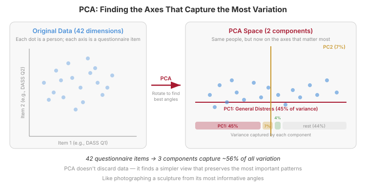
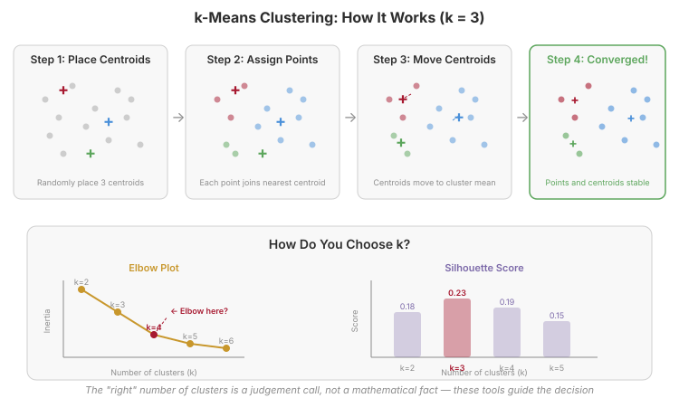

Today’s Plan
- The shift to unsupervised learning — no right answers
- Dimensionality reduction — PCA and the scree plot
- UMAP & t-SNE — vivid but dangerous visualisations
- Clustering — k-means, hierarchical, DBSCAN
- Stability — the most important question in clustering
- The psychology of “types” — categories vs. dimensions
- Getting ready for Week 8
The Shift to Unsupervised Learning
When there’s no “right answer”
Supervised vs. Unsupervised
Supervised
Weeks 2–6
You have a target variable
“Predict depression score”
“Classify elevated vs. minimal”
Clear right answers → clear metrics
Unsupervised
This week
No target variable
“Are there subgroups?”
“What are the latent dimensions?”
No right answers → stability matters
Two Main Tasks
Dimensionality Reduction
Simplify complex data into fewer dimensions while keeping the important patterns.
42 questionnaire items → 3 components
Clustering
Discover groups of similar observations without being told the groups in advance.
“Are there depression subtypes?”
If you’ve run a factor analysis in statistics, you’ve already done a version of unsupervised ML.
The Danger of Exploration
Clustering algorithms will ALWAYS find groups — even in random noise.
- Humans are pattern-seeking creatures
- Ask for 3 clusters → you’ll get 3 clusters, guaranteed
- The question isn’t “did I find clusters?”
- It’s “are these clusters real, stable, and meaningful?”
This week’s core skill: distinguishing discovery from fabrication.
Same Data, Different Question
Week 4 (Supervised)
DASS-42 dataset
“Can personality predict depression scores?”
Target: DASS_Depression
Metrics: MAE, R²
Week 8 (Unsupervised)
Same dataset
“Are there subgroups of distress?”
No target variable
Metrics: silhouette, stability
Dimensionality Reduction
Seeing the big picture
The Curse of Dimensionality
- The DASS-42 has 42 items — each person lives in 42-dimensional space
- You can’t visualise 42 dimensions
- Models need exponentially more data as dimensions increase
- Many dimensions contain mostly noise, not signal
Dimensionality reduction finds a simpler view that preserves the important patterns — like summarising a long conversation.
Principal Component Analysis (PCA)
- PCA finds new axes — principal components — that capture the most variation
- PC1 captures the single direction of greatest variation
- PC2 captures the next most (perpendicular to PC1)
- And so on…
Analogy: Photographing a coffee mug from every angle. Most photos look similar. PCA finds the few angles that show the most different views.
PCA Visually

42 questionnaire items → 3 components that capture 56% of all variation. PCA doesn’t discard data — it finds a simpler view that preserves the most important patterns.
The Scree Plot
How much variance does each component capture?
DASS-42: 3 components capture ~55% of all variation. 42 dimensions → 3.
What Does “45% of Variance” Actually Mean?
Without PCA
To describe someone’s distress pattern, you’d need all 42 item scores. That’s a lot of numbers.
With PC1 alone
One single number — their score on PC1 — tells you nearly half the story. It’s like a master volume dial for distress.
“Variance explained” = how much of the total spread in scores this dimension captures.
45% from one component is unusually high — it means distress is more “one big thing” than “42 separate things.”
If everyone who scores high on one distress symptom also scores high on the others, a single “general distress” factor will capture most of the variation. That’s exactly what PC1 is.
Loadings: What Does Each Component Mean?
PC1: General Distress
45% of variance
High loadings on all DASS items
People who score high on one symptom tend to score high on everything
PC2: Depression vs. Anxiety
7% of variance
Depression items load positive, Anxiety items load negative
What distinguishes depression from anxiety
PC3: Stress vs. Anxiety
4% of variance
Stress items load positive, Anxiety items load negative
What distinguishes stress from anxiety
The DASS three-factor structure emerges — but PC1 (general distress) dominates everything else.
UMAP & t-SNE
Non-linear visualisation
PCA is Linear
- PCA finds straight-line relationships (linear combinations)
- But what if groups are separated by curves, not lines?
- What if the structure is more complex than linear axes can capture?
UMAP (Uniform Manifold Approximation and Projection) finds non-linear structure and creates 2D maps where similar points cluster together.
PCA vs. UMAP: Same Data, Very Different Pictures

PCA is trustworthy but blurry — distances are real. UMAP is vivid but can mislead — cluster gaps and sizes may be artefacts. Use UMAP for exploration, PCA for measurement.
PCA vs. UMAP: Quick Comparison
PCA (Linear)
Groups overlap, boundaries blurry
Distances are meaningful
Reproducible (no randomness)
Variance explained is quantifiable
Best for: measurement, inference, reporting
UMAP (Non-linear)
Groups look clean and well-separated
Distances between clusters are NOT meaningful
Cluster sizes and shapes can be artefacts
Results change with different settings
Best for: exploration, hypothesis generation
UMAP is a sketch, not a photograph. A map for exploration, not a measurement tool for inference.
UMAP: Handle with Care
Three things UMAP can distort:
- Distances between clusters — two groups far apart on the UMAP plot might actually be similar
- Cluster sizes — a large blob might represent fewer people than a small blob
- Cluster shapes — tight circles might actually be elongated in the original space
Only local structure is preserved: nearby points stay nearby. Everything else is up for distortion.
UMAP is a sketch, not a photograph. Use it for exploration, not confirmation.
Clustering
Finding groups in data
What Makes a “Good” Cluster?
Cohesion
Points within a cluster are similar to each other
Separation
Points in different clusters are dissimilar
Remember: clustering algorithms will always find groups, even in random data. The question is whether the groups are real.
Three Algorithm Families
k-Means
Centroid-based
Define clusters around central points. Fast and intuitive.
You choose k in advance
Hierarchical
Agglomerative
Build a tree of nested groups. See the full hierarchy.
No need to pre-specify k
DBSCAN
Density-based
Find dense regions. Handles odd shapes and noise.
Identifies “noise” points
k-Means: How It Works
Place Centroids
Randomly place k central points in the data space
Assign Points
Each data point joins its nearest centroid
Move Centroids
Each centroid moves to the mean of its assigned points
Repeat
Steps 2–3 until nothing changes (convergence)
Fast, intuitive, and usually the first method to try. But assumes roughly spherical, equal-sized clusters.
k-Means: Watching It Work

The data points stay put — only the centroids move. The algorithm converges when nobody changes cluster. Different random starting positions can give different results, which is why stability checks matter.
Choosing k
Elbow Plot
Plot within-cluster distance vs. k
Look for the “elbow” — where adding more clusters stops helping much
Silhouette Score
How well does each point fit its cluster vs. the nearest other cluster?
Range: −1 (bad) to +1 (perfect)
Neither tool gives a definitive answer. The “right” number of clusters is a judgement call — guided by diagnostics and by whether the clusters make psychological sense.
Example: DASS-42 Clustering
Silhouette Scores
| k | Silhouette |
|---|---|
| 2 | 0.240 |
| 3 | 0.150 |
| 4 | 0.145 |
| 5 | 0.132 |
k = 2 wins — but even 0.24 is modest
Two Clusters
Cluster 0 (N = 16,908): Low distress
Depression M = 11.8, Anxiety M = 8.6
Cluster 1 (N = 17,668): High distress
Depression M = 29.7, Anxiety M = 22.8
Hierarchical Clustering
- Start with every point as its own cluster
- Merge the two most similar clusters at each step
- Continue until everything is in one cluster
- Result: a dendrogram (tree) showing the full merge history
Advantage: See the full hierarchy. Cut at any height to get any number of clusters.
Weakness: Different linkage methods (single, complete, Ward’s) give different trees — another source of instability.
Reading a Dendrogram

- Height = how different the merged clusters are
- Cut horizontally to choose the number of clusters
- Cut high → few broad groups. Cut low → many small groups.
- You can see the full hierarchy — no need to commit to one k
Advantage: See nested structure — maybe 2 broad groups, each containing 2 subgroups.
Weakness: Different linkage methods give different trees — another source of instability.
DBSCAN: Density-Based Clustering
- Clusters = regions of high density separated by low density
- Two parameters: epsilon (neighbourhood radius) and min_samples (minimum cluster size)
- Points that don’t belong to any cluster are labelled “noise”
Strengths: No need to specify k. Finds odd shapes. Identifies outliers.
Weaknesses: Sensitive to parameters. Struggles with varying density.
Stability
Can you trust your clusters?
The Most Important Question
If you run the analysis again, do you get the same clusters?
- Different random seed → same clusters?
- Random 80% subsample (bootstrap) → same memberships?
- Different algorithm entirely → same groups?
A cluster solution that changes every time you look at it isn’t a discovery — it’s noise.
DASS-42 Stability Check
k = 2 solution across 5 random seeds:
| Seed | Points Changed | % Changed |
|---|---|---|
| 42 (reference) | — | — |
| 123 | 116 | 0.34% |
| 456 | 65 | 0.19% |
| 789 | 54 | 0.16% |
| 2026 | 2 | 0.01% |
This solution is very stable — fewer than 0.35% of participants change cluster. But k = 2 is also simple (low vs. high distress). More nuanced solutions (k = 4, 5) would be less stable.
Silhouette Scores
- For each point: how much closer is it to its own cluster than to the nearest other cluster?
- Range: −1 (badly placed) to +1 (perfectly placed)
- Average across all points = overall cluster quality
| Score Range | Interpretation |
|---|---|
| 0.70 – 1.00 | Strong structure (rare in psychology) |
| 0.50 – 0.70 | Reasonable structure |
| 0.25 – 0.50 | Weak structure (common in psychology) |
| < 0.25 | No meaningful structure |
Our k = 2 DASS solution: silhouette = 0.24 — right at the boundary. The clusters exist, but they’re not strongly separated.
The Psychology of “Types”
Categories vs. dimensions
Psychology Loves Categories
- Personality types: introvert/extrovert, Type A/B
- Diagnostic categories: MDD vs. GAD vs. PTSD
- Learning styles: visual/auditory/kinesthetic
Some are useful: Diagnoses guide treatment. Categories simplify communication.
Some lack evidence: Learning styles have been extensively debunked.
But are these categories real — or convenient fictions?
The Taxometrics Debate
Categorical
You have depression or you don’t
Discrete types, clear boundaries
Dimensional
Everyone sits somewhere on a severity continuum
No natural boundaries
Haslam et al. (2020): Meta-analysis of 317 taxometric studies. Dimensional models outnumber categorical 5:1 across psychology. Most psychopathology is dimensional.
The Danger of Reification
Reification: naming a cluster makes it feel real, even if it barely survives a random seed change.
- You find 3 clusters and call them “The Anxious Achiever,” “The Resilient Introvert,” “The Stressed Coper”
- These labels create the illusion of categories where continuous variation might be a better description
- If the clusters change with a different random seed, the names were premature
Names are powerful. Use them after stability checks, not before.
Borsboom’s Network Approach
A third perspective: symptoms cause each other rather than being caused by a latent disorder.
Depression isn’t a hidden disease entity — it’s a self-reinforcing network of mutually activating symptoms. This challenges both the categorical and dimensional frameworks.
Common Misconceptions
“PCA discovers hidden factors.”
PCA finds linear combinations that maximise variance. Whether these correspond to meaningful psychological constructs depends on interpretation, not mathematics.
“More clusters = better model.”
Adding clusters always improves fit on the training data. The question is whether additional clusters are stable and meaningful.
“UMAP shows the true structure.”
UMAP is optimised for visualisation. It can distort distances, densities, and cluster boundaries. Treat it as a sketch, not a photograph.
Getting Ready for Week 8
PCA, UMAP, and clustering on real data
Week 8: Challenge Lab (Self-Paced)
Monday 27 April is a public holiday — no class next week. Complete the Week 8 lab in your assigned groups in your own time.
- Same DASS-42 dataset from Week 4 — different question
- PCA on 42 distress items — how many components?
- UMAP visualisation — colour by depression severity
- k-Means clustering on personality + distress profiles
- Stability checks — different seeds, silhouette scores
- Write a methods paragraph with your AI assistant
You may still have the data from Week 4. If not: cd weeks/week-08-lab/data && python download_data.py
New LLM Skill: Documentation
In research, your analysis is only as good as your ability to explain it.
Weak prompt
“Explain my code.”
Strong prompt
“I ran PCA on 42 DASS items from 34,576 participants. 3-component solution explaining 55% of variance. Write a methods paragraph for a psychology journal. APA style. Include sample size, measures, software.”
The AI’s draft is a starting point. You must verify every number and method name matches what you actually did.